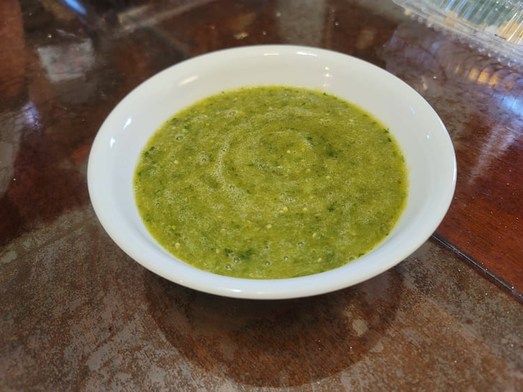

Salsa Verde

Ingredients:
- 1 lb Tomatillos, husked and rinsed
- 3 jalapeños, stems removed and optionally deseeded
- 1/2 White onion
- Water, as needed
- 1/2 cup Cilantro
- 2 cloves Garlic
- 1/2 Lime, juiced, about 1 tbsp
- 1 tsp Salt
Instructions:
- Place the tomatillos, jalapeños, and onion into a pot and fill with water to cover. Turn the heat to high and bring to a boil, then reduce to low and let simmer covered for 10 minutes.
- Strain the water from the pot and place the contents into a blender together with the cilantro, garlic, lime juice, and salt. Blend until smooth and transfer into a serving dish.